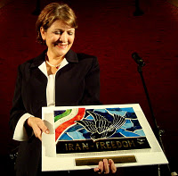

|
|
خدیجه مقدم فعال جنبش زنان اولین جایزه حقوق بشر شهر بوخوم را دریافت کرد!
سه شنبه29 آذر 1390

مادران پارک لاله - یکشنبه ۱۸ دسامبر به مناسبت روز جهانی حقوق بشر، برنامه ی شب ایرانی در کلیسا کریستوس در شهر بوخوم برای اهدای اولین جایزه حقوق بشر این شهر به خانم خدیجه مقدم فعال حقوق بشر و جنبش زنان و با شرکت میهمان افتخاری، شیرین عبادی برنده جایزه صلح نوبل، برگزار شد .این مراسم از طرف سازمان عفو بین الملل ، کانون ایران آزاد و با حمایت شهرداری شهر بوخوم اجرا شد .
مراسم، با کارهای هنری گروهی از جوانان به سرپرستی امید پور یوسف از گروه تپش ۲۰۱۲ ، آغاز شد و در فواصل سخنرانی ها ، صدای زیبای تکتم ، خواننده جوان اپرا ، آذین بخش شب ایرانی بود .
خانم شهردار "آسترید پلتزمن شولتن " ضمن خوش امد گویی به شیرین عبادی و خدیجه مقدم و ابراز خوشنودی از آشنایی با این دو، سخنرانی خود را راجع به نقض حقوق بشر در ایران ایراد کرد.
در قسمت بعدی ، دبیرکل سازمان عفو بین الملل ولفگانگ گرنز، گزارش خود را درباره بهار عربی و جنبش هایی که در کشورهای عربی اتفاق افتاده است شروع و با انتقاد از ادامه نقض حقوق بشر در این کشورها و همچنین درباره نقض فاحش حقوق بشر در ایران و سیاست های دولت آلمان و قرار داد های مختلف این کشور با چنین دولت های سرکوبگر، سخنرانی خود را به پایان رساند.
سپس شیرین عبادی سخنرانی خود را با تشکر از توضیحات جامع و کامل دبیرکل سازمان عفو بین الملل ولفگانگ گرنز در رابطه با نقض فاحش حقوق بشر در ایران آغاز کرد. وی با اشاره به موارد دیگر عدم رعایت قوانین حقوق بشری در ایران پرداخته و با انتقاد از تحریم های اقتصادی و جنگ که فقط به ضرر مردم ایران است ، بار دیگر با اشاره به مساله انرژی اتمی در ایران و خطرات جهانی آن تاکید کرد.
در قسمت آخر برنامه و قبل از اعطای جایزه به خدیجه مقدم ، ایشان سخنرانی خود را با ورق زدن کتاب تاریخ ۳۳ سال گذشته و شرایط زندگی یک زن و مادر فعال حقوق بشر آغاز کرد. از تحصن مادران و خانواده ها در مقابل زندان اوین در سال ۵۷ و آزادی زندانیان سیاسی دوره شاه، که بعد ها همین عزیزان دوباره به زندان های جمهوری اسلامی افتادند.
از کشتار زندانیان سیاسی دهه ۶۰ و قبر های دسته جمعی در گلزار خاوران، از به وجود آمدن کمپین یک میلیون امضاء ، از مادران خاوران، از مادران صلح، مادران پارک لاله، از دستگیری های مادران و حامیان آنان که بیش از صد بار اتفاق افتاده است.
از نداها، سهراب ها، کیانوش ها و مادران داغدار آن ها، از احکام سنگینی که حامیان مادران پارک لاله به علت همدردی با خانواده های جان باختگان گرفته اند، از احضاریه هایی که حامیان مادران به تازگی دریافت کرده اند ، از اعدام زندانیان عادی و سیاسی و اعدام کودکان زیر ۱۸ سال، از شرایط زندانیان سیاسی-عقیدتی، جان باختگان، شکنجه شدگان، از فشار بر اقلیت های مذهبی، قومی و جنسیتی .....
خدیجه مقدم به یاد همه مادران داغدار و آسیب دیده ۳۳ سال گذشته و با تکرار سخنان دایه سلطنه، مادر فرزاد کمانگر که بعد از به قتل رسیدن فرزندش گفت : به ما نگویید مادران داغدار ، به ما بگویید مادران با افتخار، جایزه خود را در آخر برنامه به همه مادران و مادر بهکیش که ۶ نفر از اعضای خانواده اش بوسیله رژیم جمهوری اسلامی به قتل رسیدند به عنوان اسطوره مقاومت مادران ، تقدیم و تکرار کرد: ما هرگز، هرگز از پای نخواهیم نشست .....
استقبال از این برنامه فوق العاده بود و حضور پر رنگ حامیان مادران پارک لاله و نمایندگان آنان از لندن، ایتالیا، فرانکفورت ، کلن و هم چنین تعداد زیادی از حامیان مادران پارک لاله از شهر دورتموند گرمای همبستگی با مادران پارک لاله و خانم خدیجه مقدم عزیز را ، صد چندان کرده بود .